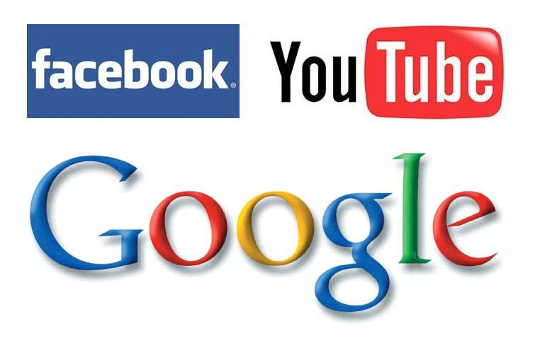

Facebook.com <=> Google.com <=> Youtube.com
Written by Supakorn Laohasongkram on July 16, 2014.
I think by far my favorite sites are facebook.com, youtube.com, and google.com. (The popular choices I presume.) The main reason why they are my favorite is because they are the ones I considered most useful and I actually use them most in my daily life. In this blog post, I would analyze these favorite websites of mine to dig a little deeper into why they are my favorite! So let's start looking the first one: facebook.com!
Facebook.com
First description that comes to mind...
Visually: Simple and neat; but not particularly pretty.
It makes sense because making website prettier or fancy could mean lesser performance. And for website like facebook, they probably need perform than looking nice.
Functionality: Practical, Useful, Fun, Never feel like you are alone, Never lose a friend once friended on facebook!, Keeping people connected.

Facebook has somewhat become a neccesity in a lot of our daily lives. Facebook has a lot of functions in it. One could literally spend the entire day doing things within the facebook ecosystem: chatting, browsing other's profiles, browsing other's picture, commenting, writing blog, explore new pages, play video games, and etcs.
Personally, I feel facebook's value simply boils down to the value we put on other people we come cross in our lives. And of course these people means a lot to us. And that is where facebook's value emernate.
Without facebook or other social web app, it is very hard to keep in touch and know what the other people are up to. Even emails couldn't level up to the intimacy and a sense of community that facebook has established.
Thus, facebook's main function is simply to keep people connected.
Design: Complex, Massive, Highly Dynamic
I am very new to the web developing world. But with the amount of data facebook has to handle plus the gigantic number of users plus what facebook can do in terms of its functionalities, I feel facebook has to be very complex and very well organized to serve every user.
Google.com
Google--again--another neccesity. "Google it! Google it!" people often say. In today's world, where information is scatter through out the internet. Google offers one the power to quickly access the right information. Google is my favorite website because of the similar criteria as facebook, it's useful and I use them all the time. (I guess you are seeing a pattern here.) Yes, I am not particularly a design person. I am a pratical man! and what works for me is beautiful!
First description that comes to mind...
Visually: Simple and a little playful
Google main interface is very simple. It's not beautiful or visually stunning. I wrote "a little playful" because of two reasons: 1. once in a while they change the google logo to keeping things interesting, and 2. Google.com have this "feeling lucky" button which I feel is quite playful but it is something I never use.
Functionalities: Practical, Neccesity, Quick, Omniscience
Google has one simple yet very complex function: find what I am looking for on the internet!
Design: Complex, Massive, Overarching
What is the algorithm for finding a needle in the haystack? Yes, I think that's very much like google's algorithm for searching something on the internet. However, google probably does in less than a second. How? I don't know.
Youtube.com
Youtube, if I am not wrong, is also run by Google. It is my favorite website #3 because it is a lot of things: a source of entertainment, a source of knowledge, and a place to learn and share something new. Recently, I just learned how to play so song on a piano called "Gymnopedia No.1" on Youtube! I didn't need to hired a piano teacher or attend a piano school! Wonderful!
First description that comes to mind...
Visually: Nice, Minimalist, Organized, Advertisement again?!
Similar to facebook, Youtube needs to function more than it needs to look pretty. So adopting the more minimalist approach in its visual make sense. As compared to facebook, I feel facebook is very scattered. So facebook is either not organized or there are just too many data to be organized or Youtube is just very organized. (follow? haha) Anyways, YouTube is looking great!
Functionalities: The New TV, Have Everything You Want to See and More, Teach You How to Do Almost Everything
I haven't never been much of a TV person because TV never give me exactly what I want to watch. But YouTube, on the other hand, could. So in my room there is no need for TV. YouTube, in a sense, is the new-replacement of TV, a new and more robust source for information.
Design: Organized, hold large amount of infomation
Videos files seems to take up most space in my computer. And Youtube seems to be holding the most of these files on the internet. To constantly be ready for more videos uploading everyday, and being able to serve these up as quickly as possible seems to be the main task of the design.
Conclusion: Comparisons
In terms of the visual of these three websites--Facebook.com, Google.com, Youtube.com, I believe they all adopt a minimalistic approach. These are not porfolio websites where there aren't many moving pieces. These websites are very dynamic, complex and are constantly being served up to millions of user every hour. Thus, its ability to perform by far overweight its ability to look nice. Nevertheless, these sites are not ugly either. They are only nice enough to function well.
The more difficult topic to compare is the functions of these three websites. Since the three websites are answering a very different questions--facebook:social network, google.com:searching the internet, and YouTube: sharing videos as a source of information--it is not fair to judge them on the same scale. They all function in their own way.
Lastly, in term of its structural design, all three of these websites are very large, complex, and have massive amount of users. With that said, the design of these website must therefore be well-organized, quick